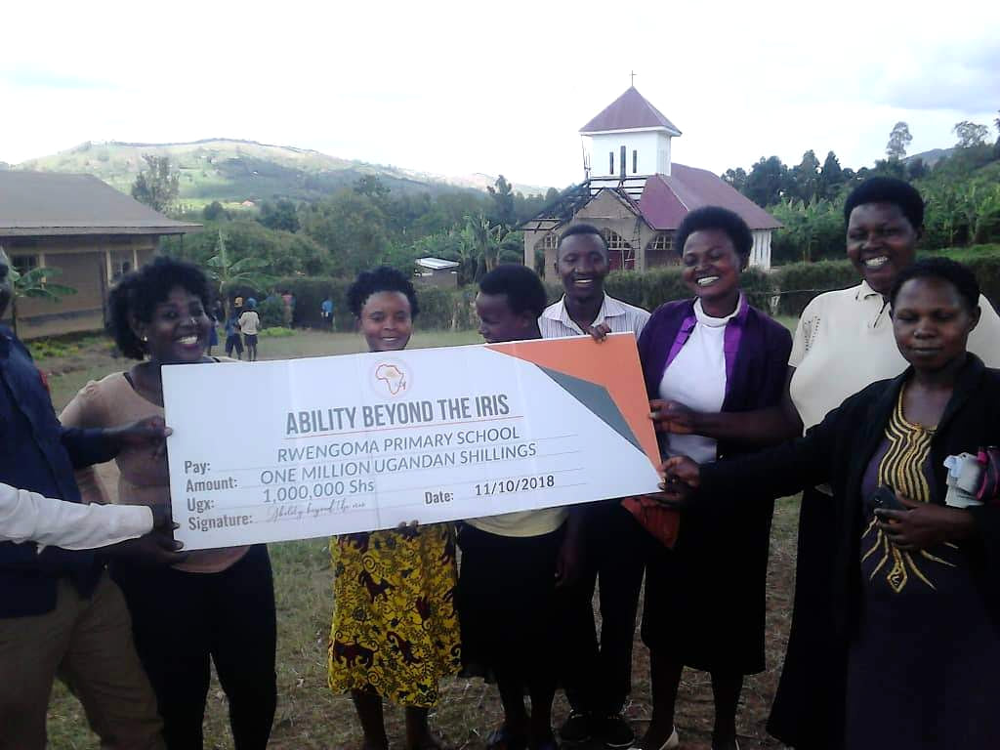
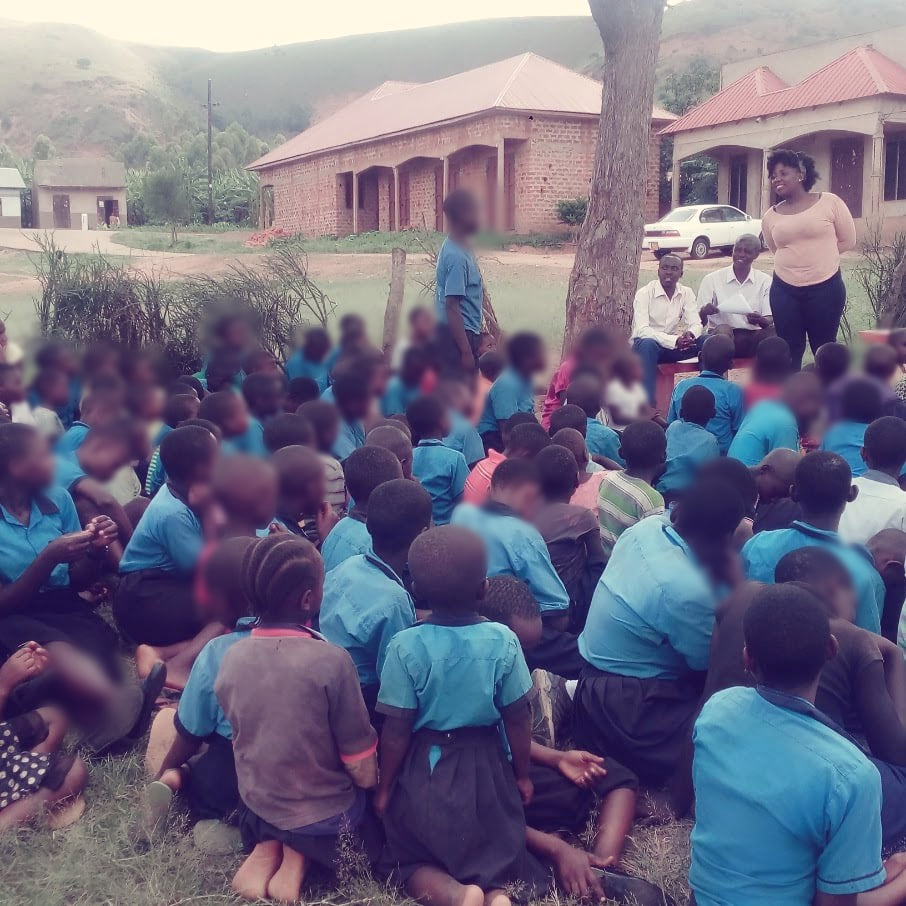

ABI Uganda partnership · Project archive
Supporting school meals at Rwengoma Primary
A contribution to school lunches and a vegetable garden initiative
Historical project report with a contribution recorded in October 2018
Through ABI, the initiative contributed UGX 1,000,000 to Rwengoma Primary School to support its lower primary lunch programme and its plan to establish a school vegetable garden. The contribution came from the approximately €7,000 raised by pupils at Wilhelm-Remy-Gymnasium Bendorf. It responded to concerns that hunger was among the reasons pupils were leaving school.
A contribution towards school meals
Rwengoma Primary School is a public school whose limited funds made it difficult to sustain school lunches. The project account identifies hunger as one of several reasons for pupils dropping out. The contribution supported the school’s own initiative to improve its food provision.
Anchored Bridges Initiatives (ABI), formerly Ability Beyond the Iris, delivered the support through the partnership. The handover cheque photographed with school representatives records UGX 1,000,000 and bears the date 11 October 2018.

The UGX 1,000,000 contribution was an allocation from the approximately €7,000 raised by the Bendorf pupils. The wider school partnership and the school-fee support are covered in companion reports.
A vegetable garden to support the lunch programme
The school’s proposed vegetable garden linked the contribution to a practical source of food for its lunch programme. The aim was to strengthen the school’s ability to provide meals for lower primary pupils and address hunger as a barrier to staying in school.
The contribution supported a locally identified priority: helping the school strengthen its lunch programme through vegetable growing. Improved food provision and keeping pupils in school were the central objectives of the initiative.
The project illustrates how pupil-led fundraising in Germany could support a locally identified priority in Uganda. We thank the pupils and staff in Bendorf, the Rwengoma school community and ABI for their part in the initiative.

Download the project report as a PDF · Download the editable Word report
Programme figures and outcomes are reported by the project team.